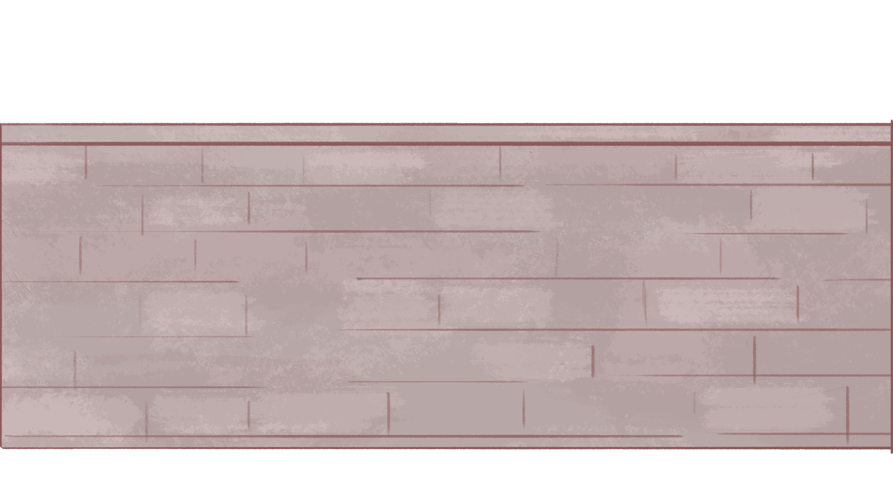
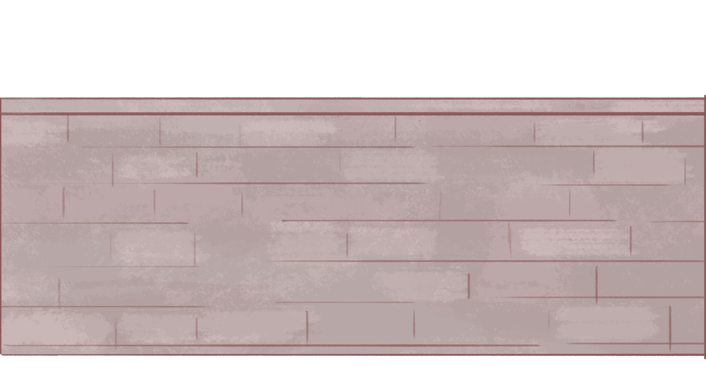
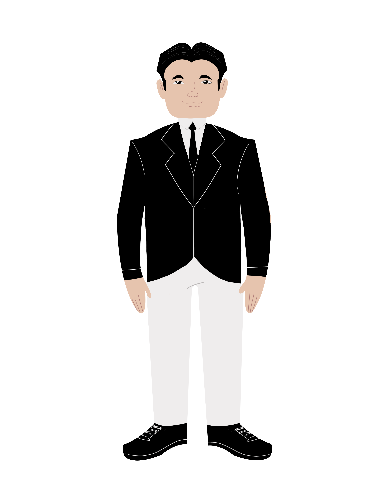
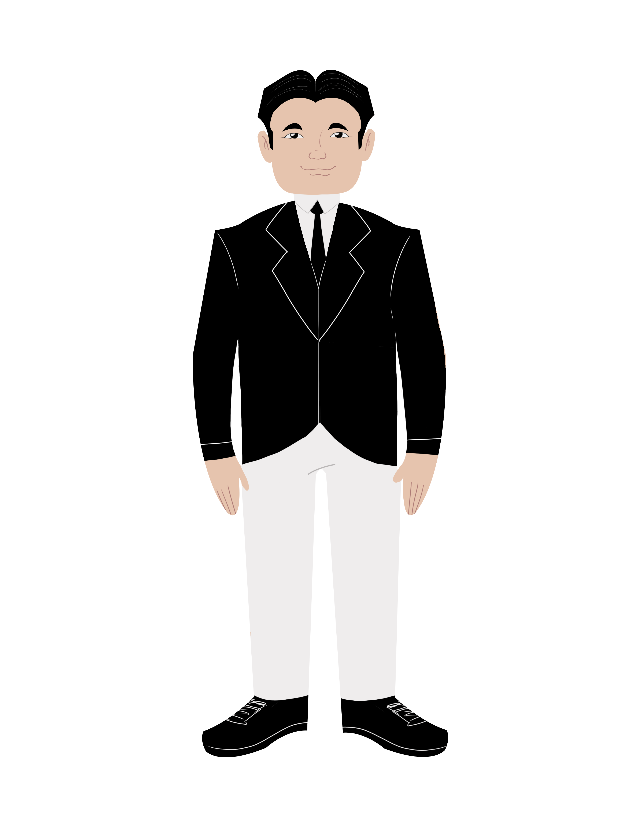
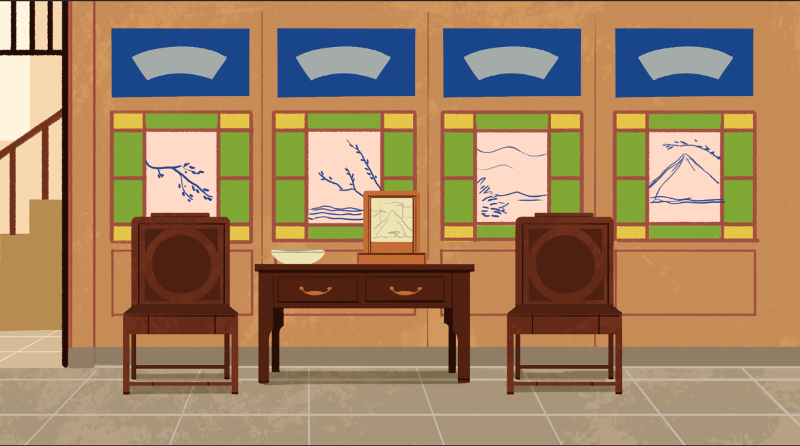
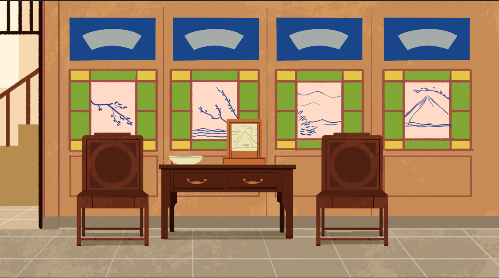

 


 

Chinese restaurants serve a variety of budgets and appetites, from fast-food storefronts to palatial banquet halls.China is a large country and its many regional specialties are also represented.
New York City alone has 2500 Chinese restaurants, plus countless other Chinese-inspired eateries.
The history of how Chinese food became favored and Chinese restaurants so numerous is filled with surprising twists and turns, as well as unexpected actors.
In the 1870s, masses of white men mobilized to halt Chinese immigration.
They carried incredible political power. Women could not vote and black men were prevented at the ballot box from casting their opinions.
Politicians headed their demands, passing what would become the Chinese Exclusion Act of 1882.
It stopped Chinese laborers from coming into the country and those already here from naturalizing.
There were loopholes, however. Special provisions allowed Chinese businessmen to enter and to sponsor the emigration of wives and children. These were known as “merchant exemptions.”
For a time Chinese restaurant owners counted as “laborers,” whose immigration opportunities had been eliminated by the Chinese Exclusion Act of 1882.
Restaurant owners fought long and hard through the courts to be counted as merchants.
The fortunes of restaurant owners changed. In 1915, a federal appeals court judge in New York finally affirmed that restaurants owners qualified for merchant exemption. This case set a legal precedent that prevailed until Chinese Exclusion was repealed.
The Chinese Restaurant Database is based on the efforts of the Chinese to live, work, and travel while Chinese Exclusion remained in force (1882-1943). Dozens of researchers have scrutinized immigration files to present, here and now, the Chinese restaurant industry.
Chinese laborers opened restaurants to expand their immigration opportunities.
In 1919, the number of restaurants spiked. World War I had just ended and the American economy was strong.
Most Chinese laborers had come to the United States as young adults. Typically, relatives who had exemption statuses sponsored them.
Many aspired to go into business for themselves, instead of working for others. Opening a restaurant called for more capital than most laborers had. Banks refused them loans.
They found a solution--pool resources. They operated restaurants as partnerships. Typically, four men invested equally and agreed to run the restaurant together.
Often times they needed to fundraise from friends and family. They sold shares, which paid these silent investors dividends at the end of the year. Most restaurants had $20,000-$30,000 in starting capital, worth nearly half a million today.
The restaurant soon paid off for partners wishing to reunite with family in China
After a year, one partner was eligible for merchant exemption.
In the immigration interview, he told officers about the restaurants. Who his partners were. What were his duties. He detailed the finances as well.
Witnesses showed up to support his case. The law required two non-Chinese individuals in merchant applications. Restaurant owners typically called on vendors for help.
With papers in hand, Chinese restaurant owners went to China. They had been away a long time. Chinese laborers had to save for many years to become partners in restaurants.
They intended to reunite with their family. Many restaurant owners left behind wife and children in their hometowns.
These were joyous occasions. Everyone in their hometowns celebrated these return visits. Chinese restaurant owners often stayed for a year, before returning to the United States.
He often returned to with a young son to teach the restaurant business.
This is how Chinese immigrants were able to grow their businesses and communities.
End.